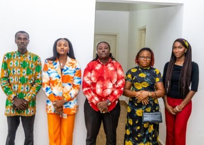
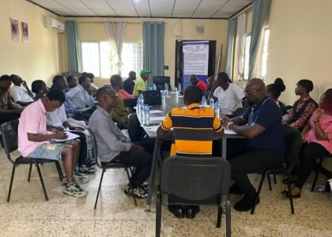
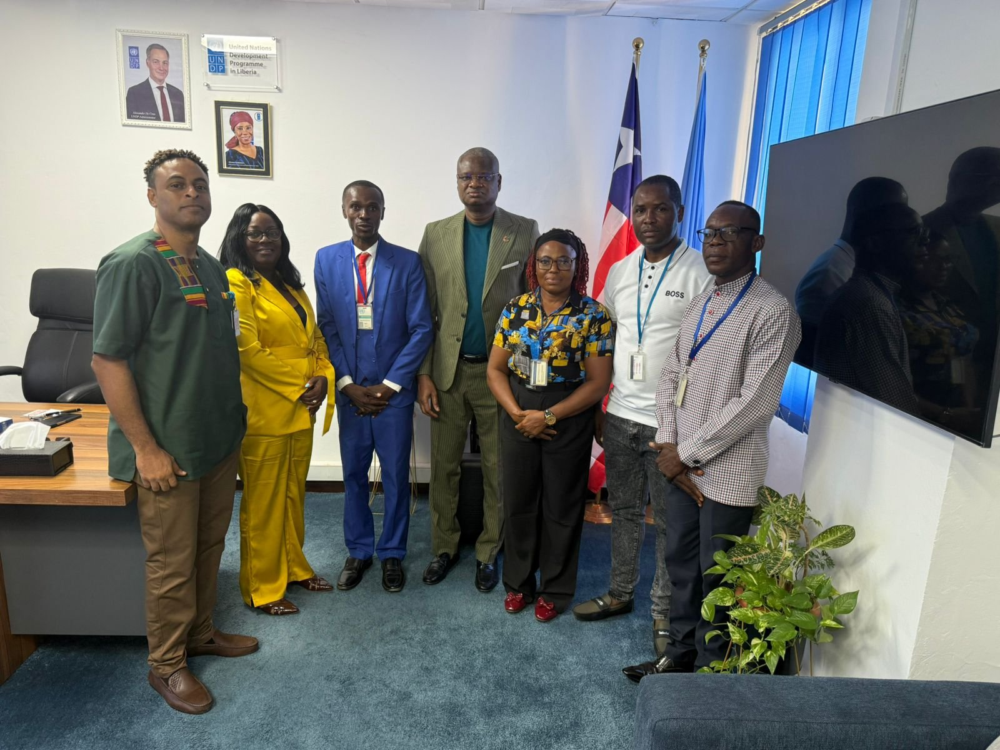

Partnerships
Partnerships that matter
No nation or organization can drive Africa’s transformation alone. Strategic collaboration can connect resources, expertise, and shared priorities.
Summit news & insights
Perspectives on partnership, leadership, investment, youth, women, and the journey toward a more connected continent.
Latest insights

No nation or organization can drive Africa’s transformation alone. Strategic collaboration can connect resources, expertise, and shared priorities.

Engagement with diplomatic missions, development institutions, and investors can unlock sustainable opportunities across Africa.

Africa’s greatest strength lies in its people—especially the young leaders and women building enterprises, communities, and solutions.
Stay connected
Meet the people and partnerships shaping the Summit in Monrovia.